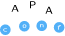

<mat-sidenav-container class="sidenav-container">
  <mat-sidenav  
  #drawer class="sidenav" 
  [ngClass]="{hidden: !(isHandset$ |async)===true}"    
  fixedInViewport
      [attr.role]="(isHandset$ | async) ? 'dialog' : 'navigation'"
      [mode]="(isHandset$ | async) ? 'over' : 'side'"
      [opened]="(isHandset$ | async) === false">
    <mat-toolbar >Menu</mat-toolbar>
    <mat-nav-list>
      <a mat-list-item (click)="drawer.toggle()" routerLink='home'>INICIO</a>
      <a mat-list-item (click)="drawer.toggle()" routerLink='eventos'>EVENTOS</a>
      <a mat-list-item (click)="drawer.toggle()" routerLink='artigos'>ARTIGOS</a>
      <a mat-list-item (click)="drawer.toggle()" routerLink='sobre'>SOBRE</a>
      <a mat-list-item (click)="drawer.toggle()" routerLink='contacto'>CONTACTO</a>
      <a mat-list-item (click)="drawer.toggle()" routerLink='comunidades'>COMUNIDADE</a>
      <a mat-list-item (click)="drawer.toggle()" routerLink='doacao'>DOAÇÕES</a>
    </mat-nav-list>
  </mat-sidenav>

  <mat-sidenav-content>
    <mat-toolbar color="primary">
      <button
        type="button"
        aria-label="Toggle sidenav"
        mat-icon-button
        (click)="drawer.toggle()"
        *ngIf="isHandset$ | async">
        <mat-icon aria-label="Side nav toggle icon">menu</mat-icon>
      </button>
      <div>
        
      </div>
     
      <span class="spacer"></span>
      <div [ngClass]="{hide: (isHandset$ |async )===true}">

      <a mat-button routerLink='home'>INICIO</a>
      <a mat-button routerLink='eventos'>EVENTOS</a>
      <a mat-button routerLink='artigos'>ARTIGOS</a>
      <a mat-button routerLink='sobre'>SOBRE</a>
      <a mat-button routerLink='contacto'>CONTACTO</a>
      <a mat-button routerLink='comunidades'>COMUNIDADE</a>
      <a mat-button routerLink='doacao'>DOAÇÕES</a>
      </div>
     
    </mat-toolbar>
    <!-- Add Content Here -->
    <ng-content></ng-content>
  </mat-sidenav-content>
</mat-sidenav-container>
